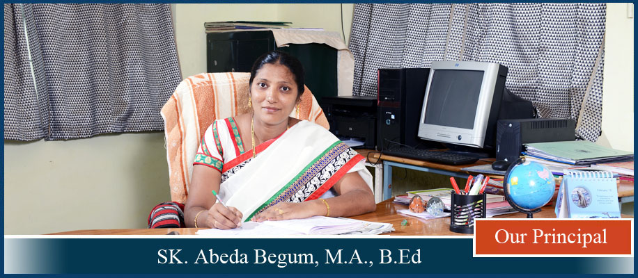

About School
It all began with inspiration of one man Dr. Vivek Vishnupanth Bhaskarwar in the year 2008. GEMS is a Co-Educational school run under Shri Balaji Bahuuddeshiya Shikshan Sanstha, Digras. GEMS stands for re-integration of Indian culture to suit the modern needs with the motto “Education for Peace.” The GEMS conducts innumerable cultural and educational activities with the underlying message of spreading cultural unity and interfaith harmony in every Indian, irrespective of caste, creed, language, nationality and economic status. The sprawling campus of the school is located in the outskirts of Digras in about 5 acres surrounded by beautiful green belt, with learner friendly ambience, conductive for learning.
The curriculum would cover the frontier areas of basic Science and Mathematics with IIT curriculum. So as to train young minds to appreciate, understand and grasp the widening horizons towards the carrier development programmes, carrier counseling and training for competitive examinations like IIT, JEE, NEET and Many more.
The school monitors and develops every aspects of students learning. So that the student obtains harmonious and non-conflicting training in his/her impressionable years of life.
‘Students must be made feel that all our efforts are for their benefit in the future.”
From Chairman's Desk
“Creating Intelligence”, creating lifelong learners’
With a vision of “Building Responsible Citizens for a Better Tomorrow.” I believe that success follow their heart, however the environment around us isn’t always suited for nurturing our passions, keeping individuals from realizing their true potential. We at GEMS imbibe their qualities, which not only help students realize their passion but equip them to achieving it in an efficient and ethical manner. And also our students get the best of indoor and outdoor training, moulding them to think critically synthesize knowledge and reflect on their own thought process. “Every child is a work of art and every teacher is an artist who infuses expression and thought into each individual.”
Through this we ensure that our students excel not only within the education system but in the real world as well, allowing our students to “Arise, Awake and Ascend.”
I welcome our students to blossom at GEMS school for the inculcation of good values, ethical behaviour, confidence and leadership qualities.
From Principal Desk

“Education is of two-types one should teach us how to make a living and the other how to live.” –John Adams.
I delightfully welcome you into the GEMS family. It is my vision to provide the world with motivated, responsible and disciplined youth, to shape a better future. I believe this can be achieved by strengthening their foundation upon which they can create a successful future for themselves and the society around them. Along with the academic excellence and vast sports opportunities, we provide our students with and exposure to the realities of the world. We sculpt them into competitive, empathetic, optimistic individuals who strive to succeed in every challenge they are faced with.
“The direction in which education starts a man, will determine his future in life’ says Plato ….
‘Catch them young’ is the tag line towards achieving the vision of this great philosopher. The right platform for building the foundation for education to ignite, fuel the interests and choices in students are the schooling years.
The almanac is a useful resource in the hands of the teacher, student and parent to keep the channels of communication and progress open for achieving the goals set for the next academic year. So use this almanac regularly and effectively so as to ensure a smooth and enriching journey through yet another amazing year at GEMS.
May this academic year to be all that one has hoped and wished for.
“Always in the pursuit of excellence…….
Vision
“To be an institute that nurtures free and happy minds thereby empowering students to excel and contribute to the society in the field of their choice.”
Motto
Mission
“To create vibrant centers for learning which provide a congenial atmosphere for students to excel academically and develop into ethically strong and morally elevated individuals.”